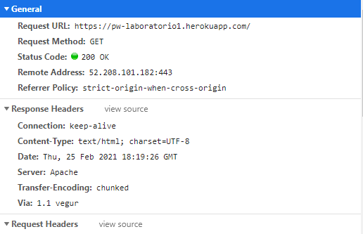
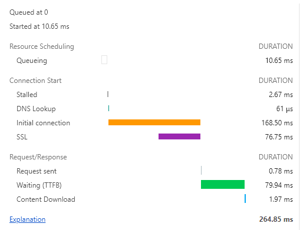

Página Web Report
Com base nas observações feitas durante a execução do primeiro lab de programação web irei reportar abaixo as anotações feitas:
- Alojamento de página Web na cloud
- Depois de ter criado meu repositório no Git Hub e feito o deploy no Heroku temos aqui a minha Primeira Página
- Conhecer a Internet
- Endereço de IP
- A partir da página https://whatismyipaddress.com/ obtive o endreço 87.196.72.228, localizado em:
- Da mesma forma mencionada acima, já agora utilizando uma outra ferramenta complementar https://ipinfo.info/html/ip_checker.php para obter o endereço IP da página Web criada, obtive 34.246.252.198 onde tem servidor fixado em:
- Percurso
- Utilizando a ferramenta GeoTraceroute, Em https://geotraceroute.com/ podemos visualizar graficamente por onde passam os pacotes IP, até chegar a minha Primeira Página
- Foram realizados três saltos de meu IP adress até ao endereço do servidor de minha Primeira Página
- PT - Prior Velho

- PT - Lisboa
- PT - Frankfurt

- Acesso via HTTP à minha página Web
- HTTP
- Inspect
- Preview
- Headers
- Timing


Após inserir a URL de minha página no brownser, será feito enviado ao servidor Web um pedido do conteúdo correspondente a esse ULR e assim podemos verificar o código fonte com o comando CTRL + U

Após os passos anteriores e ainda dentro da página, foi utilizado o comando Ctrl + Shift + i, e já dentro do brownser delevoper tool selecionado a aba network onde podemos observar que ela oferece informações sobre os recursos que são utilizados pela página em tempo real, nesse caso podemos ver que são baixados um arquivo PNG e um outro contendo o domínio da página.

Já agora para cada arquivo podemos fazer um inspect mais a fundo
Exibe uma pré-visualização da página

Exibe-se informações, como url, status e outras informações sobre comunicação da página.

Exibe os tempos de carregamento para cada arquivo
Página Web Report
Com base nas observações feitas durante a execução do primeiro lab de programação web irei reportar abaixo as anotações feitas:
- Alojamento de página Web na cloud
- Depois de ter criado meu repositório no Git Hub e feito o deploy no Heroku temos aqui a minha Primeira Página
- Conhecer a Internet
- Endereço de IP
- A partir da página https://whatismyipaddress.com/ obtive o endreço 87.196.72.228, localizado em:
- Da mesma forma mencionada acima, já agora utilizando uma outra ferramenta complementar https://ipinfo.info/html/ip_checker.php para obter o endereço IP da página Web criada, obtive 34.246.252.198 onde tem servidor fixado em:
- Percurso
- Utilizando a ferramenta GeoTraceroute, Em https://geotraceroute.com/ podemos visualizar graficamente por onde passam os pacotes IP, até chegar a minha Primeira Página
- Foram realizados três saltos de meu IP adress até ao endereço do servidor de minha Primeira Página
- PT - Prior Velho
- PT - Lisboa
- PT - Frankfurt
- Acesso via HTTP à minha página Web
- HTTP
- Inspect
Após inserir a URL de minha página no brownser, será feito enviado ao servidor Web um pedido do conteúdo correspondente a esse ULR e assim podemos verificar o código fonte com o comando CTRL + U
Após os passos anteriores e ainda dentro da página, foi utilizado o comando Ctrl + Shift + i, e já dentro do brownser delevoper tool selecionado a aba network onde podemos observar que ela oferece informações sobre os recursos que são utilizados pela página em tempo real, nesse caso podemos ver que são baixados um arquivo PNG e um outro contendo o domínio da página.
Já após um click em um hyperlink temos uma sequência de arquivos descarregados